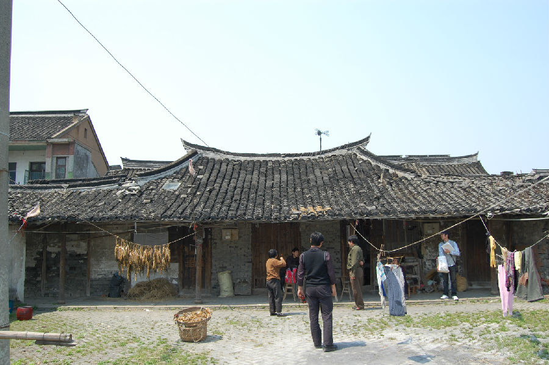

嘉兴市文物保护网 · 市级文物保护点 · 2020-11-06 · 原文

红联村胡氏民宅位于嘉兴市秀洲区王江泾镇红联村1组九军河，据住户介绍该建筑为民国所建。坐北朝南，原为宅院式建筑，现存后两进及东西厢房，木梁架结构，平房，穿枋抬梁式并存，前出檐，总占地面积354平方米，东西两厢房间原为天井，现已改建。后一进有五开间，进深5米。当中为天井进深3.2米。后二进进深7.2米，已废弃部分坍落。屋顶为单檐庑殿顶，地面均用小青砖铺设，该宅用料一般，但局部雕工较精，具有江南民居特色，虽然保存情况不好，但仍具一定的历史和艺术价值。2010年公布为嘉兴市文物保护点。